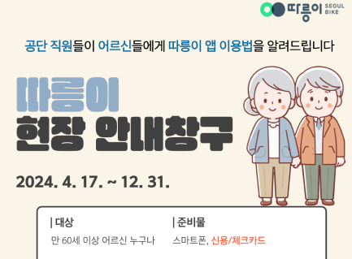
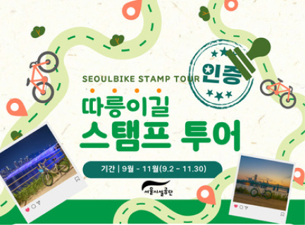
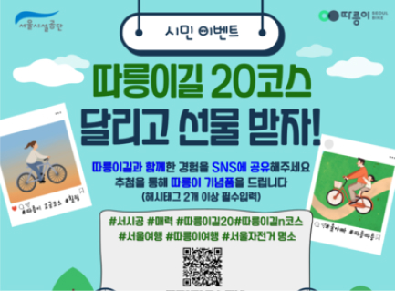
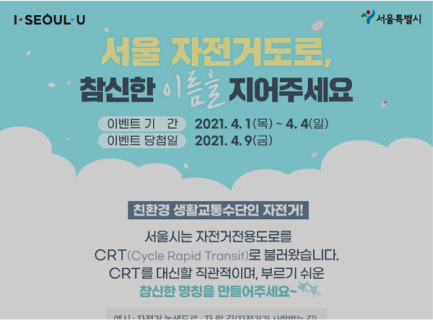
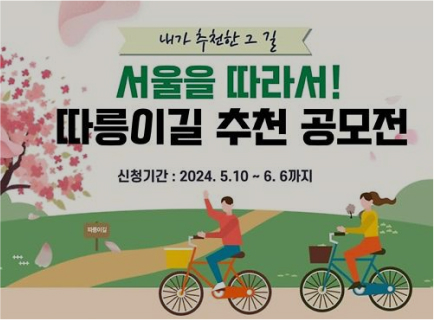
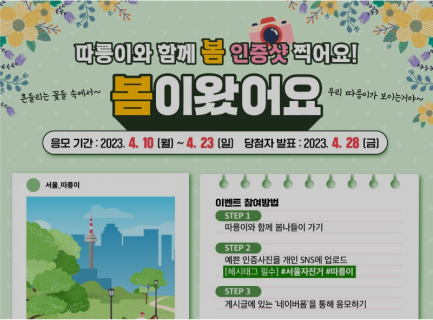
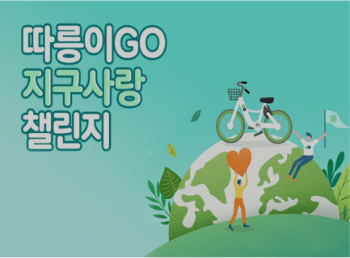

이벤트
추천 코스로 새로운 경치를 즐기고, 특별 이벤트에 참여해 보세요
이벤트로 새로운 경험과 혜택을 누리세요
-
 - 따릉이 현장 안내창구
- 2024. 4. 17 ~ 12. 31
-
 - 따릉이길 스탬프 투어
- 2024. 9. 2 ~ 11. 30
-
 - 따릉이길 SNS이벤트 개최
- 2024. 9. 6 ~ 11. 30
-
- 이벤트 리뷰를 부탁해
- 2024. 10. 11 ~ 11. 29
-
- 티머니GO X 따릉이 친구초대 이벤트
- 2024. 10. 14 ~ 예산 소진 시까지
-
 - 서울 자전거도로, 참신한 이름을 지어주세요.
- 2024. 5. 10 ~ 6. 6
-
 - 따릉이길 추천 공모전
- 2024. 5. 10 ~ 6. 6
-
 - 따릉이와 함께 봄 인증샷 찍어요!
- 2023. 4. 10 ~ 4. 23
-
 - 따릉이GO 지구사랑 챌린지
- 2022. 6. 13 ~ 7. 17